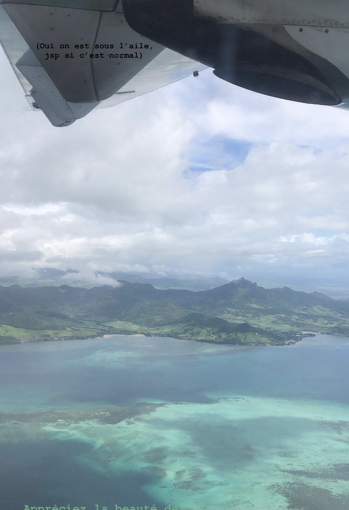

Hey yall I'm Kim :)

My name is Kim, I'm 19 and I'm French and Mauritian. I am a first year student at ESSEC Business School and I am currently in Cergy but my heart belongs in Mauritius. I am a young adult who wants to make the most out of the only life she has. I am curious, ambitious and motivated person either in my professional and personal life and I am always looking forward to discover every new type of things.
Get to know my universeMy passions
I am a FAN of travelling. So far I have visited ten different countries going from a small island where it feels like time stopped called Rodrigues to the city where everything seems possible, New York and I want to discover more and more. I am also passionated about music. Since my youngest age I've singing my lungs out and since not so long ago I decided to start to learn the guitare to have a nice background melody when I sing.
My Activities
I haven't always been a sports addict but I started practicing kick boxing for two years and I love it. I am also a member of the HeForShe club at ESSEC which the feminist club of the school as I've been one since I was born. I am at the campus pole which mean that I need to organise events for the club to spread more informations about feminism around the school and make people know better about what it is.
Regarding my personal life
My family and my friends are the most important things for me. I love spending time with them, travelling around the world with them, litteraly do anything as long as we are together it will always be quality time.